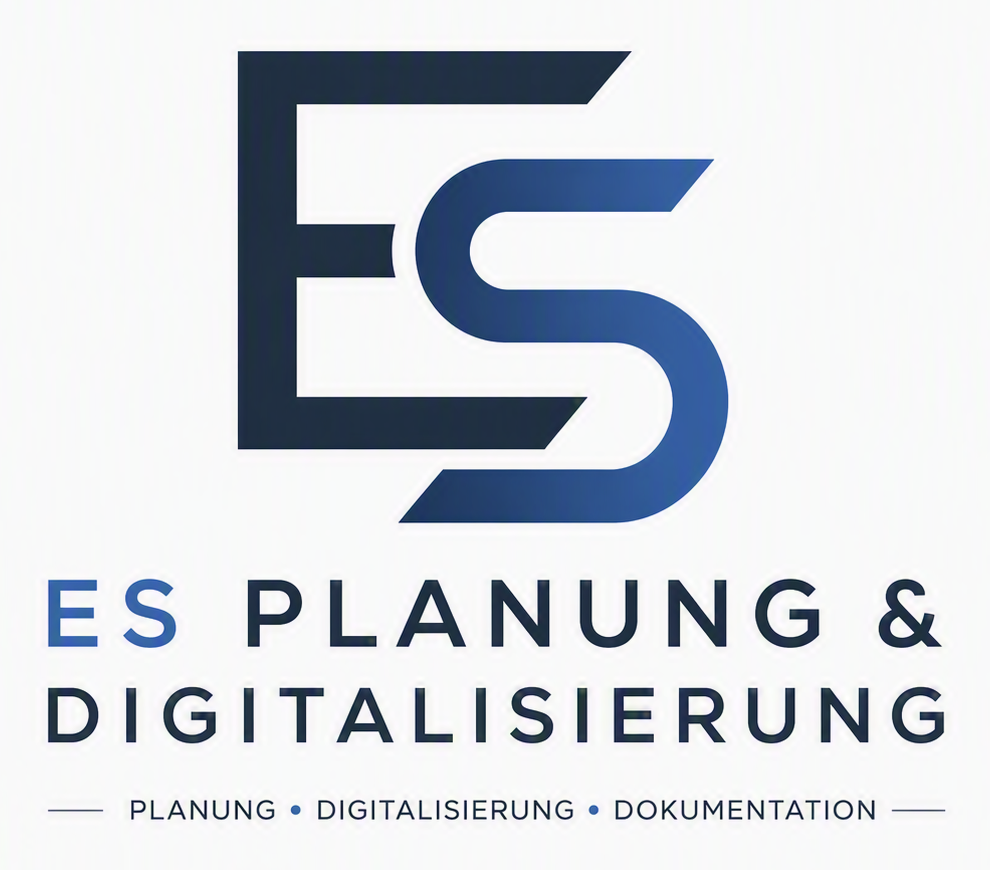

Planung
Technische Grundrisse, Anlagen- und Sicherheitsplanung sowie projektbezogene Ausarbeitung und Abstimmung.
Technische Planung und digitale Unterstützung für bestehende Kunden und ausgewählte Projekte - strukturiert, nachvollziehbar und praxisnah.

Der Auftritt ist bewusst schlank. Im Mittelpunkt stehen konkrete Projektunterstützung, nachvollziehbare Unterlagen und digitale Werkzeuge, die den Arbeitsalltag vereinfachen.
Technische Grundrisse, Anlagen- und Sicherheitsplanung sowie projektbezogene Ausarbeitung und Abstimmung.
Strukturierung von Informationen, digitale Projektablagen, praxistaugliche Tools und automatisierbare Arbeitsabläufe.
Übersichtliche Projektunterlagen, nachvollziehbare Übergaben, Bestandsdokumentation und klare technische Kommunikation.
Für bestehende Kunden und konkrete Projektanfragen.
Eric Staskiewicz
ES Planung & Digitalisierung
info@es-planung-digitalisierung.de
es-planung-digitalisierung.de